|
NEC - Roda JC (1-3) 24 augustus 2003 |
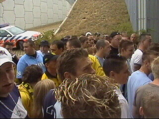
Een kwartiertje voor de aftrap arriveerden we in
de Goffert.
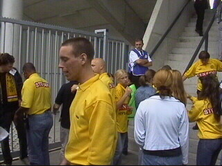
Deze pieljanus verbood me een videocamera
naar binnen te nemen.
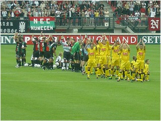
Gelukkig had ik mijn "Cybershot" nog.
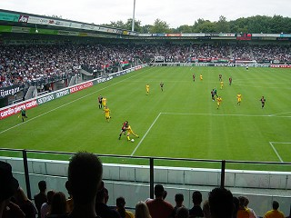
Roda speelde enorm gedreven en liet een aantal
flitsende combinaties zien.
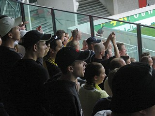
Het Roda-publiek waardeerde dit met vrijwel
onophoudelijk gezang en getrommel.
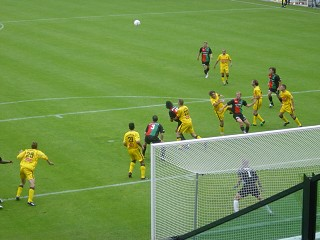
Hoewel er redelijk hard gespeeld werd, deelde
scheidsrechter Luinge geen enkele kaart uit.
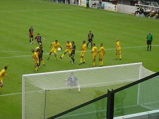
De geschorsten Addo en Sonkaya waren deze
wedstrijd vervangen door Brouwers en Vicelich.
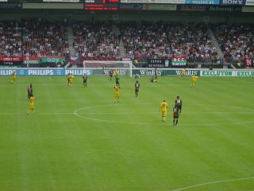
Cristiano scoort uit een pass van Sergio 0-1 in
de 40e min.
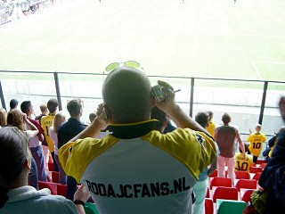
De multi-mediaman van rodajcfans.nl
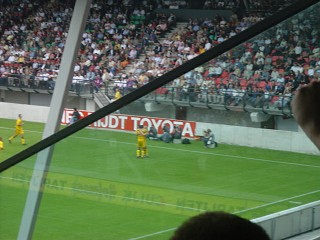
Anastasiou scoort 0-2 (61').
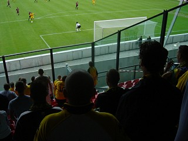
Even later is het weer Cristiano die scoort: 0-3
(69').
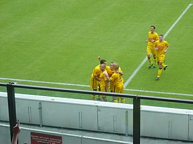
Blij, blij, blij!
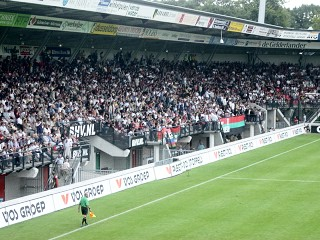
De Goffert stroomt leeg en is muisstil. In de
slotfase waarin Roda gas terugneemt scoort
invaller de Freitas nog 1-3, (90').
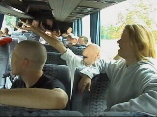
Auf wiedersehen ;-)
© Koempels
Pleasure Dome